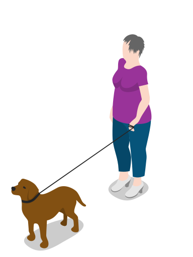

<app-menu paginaTitulo="Home" [menuCliente]="verMC"></app-menu>

<ion-content>
  <ion-grid fixed>

    <ion-row>
      <ion-col>
        <ion-card style=" text-align:center;">
          <ion-item>
            
            <!-- <ion-label>ion-item in a card, icon left, button right</ion-label> -->
            
            
          </ion-item>
        
          <ion-card-content routerLink="/perfil-mascota" routerDirection="root" (click)="enviarLink('/perfil-mascota')">
            <ion-card-title>Mis Mascotas</ion-card-title>
            <ion-icon name="paw-outline" slot="start"></ion-icon>
            Registrar o editar información de sus mascotas.
            <ion-button fill="outline" slot="end" class="botonMenu" routerLink="/perfil-mascota" routerDirection="root" (click)="enviarLink('/perfil-mascota')">Ir</ion-button>
          </ion-card-content>
        </ion-card>
      </ion-col>
    </ion-row>
    <ion-row>
        <ion-col>
          <ion-card style=" text-align:center;">
            <ion-item>
              
              <!-- <ion-label>ion-item in a card, icon left, button right</ion-label> -->
              
              
            </ion-item>
          
            <ion-card-content routerLink="/quiero-paseo" routerDirection="root" (click)="enviarLink('/quiero-paseo')">
              <ion-card-title>Quiero un Paseo</ion-card-title>
              <ion-icon name="walk-outline" slot="start"></ion-icon>
              Solicitar que algún paseador cuide de su mascota por un periodo de tiempo.
              <ion-button fill="outline" slot="end" class="botonMenu" routerLink="/quiero-paseo" routerDirection="root" (click)="enviarLink('/quiero-paseo')">Ir</ion-button>
            </ion-card-content>
          </ion-card>
      </ion-col> 
    </ion-row>
    <ion-row>
      <ion-col>
        <ion-card  style=" text-align:center;">
          <ion-item>
            
            <!-- <ion-label>ion-item in a card, icon left, button right</ion-label> -->
            
            <!-- <ion-button fill="outline" slot="end" href="#">Ver</ion-button> -->
          </ion-item>
        
          <ion-card-content routerLink="/perfil-persona" routerDirection="root" (click)="enviarLink('/home')">
            <ion-card-title>Mi Perfil</ion-card-title>
            <ion-icon name="person-circle-outline" slot="start"></ion-icon>
            Editar sus datos personales como dueño de las mascotas.
            <ion-button fill="outline" slot="end" class="botonMenu" routerLink="/perfil-persona" routerDirection="root" (click)="enviarLink('/home')">Ir</ion-button>
          </ion-card-content>
        </ion-card>
      </ion-col> 
    </ion-row>

    
  </ion-grid>
</ion-content> 